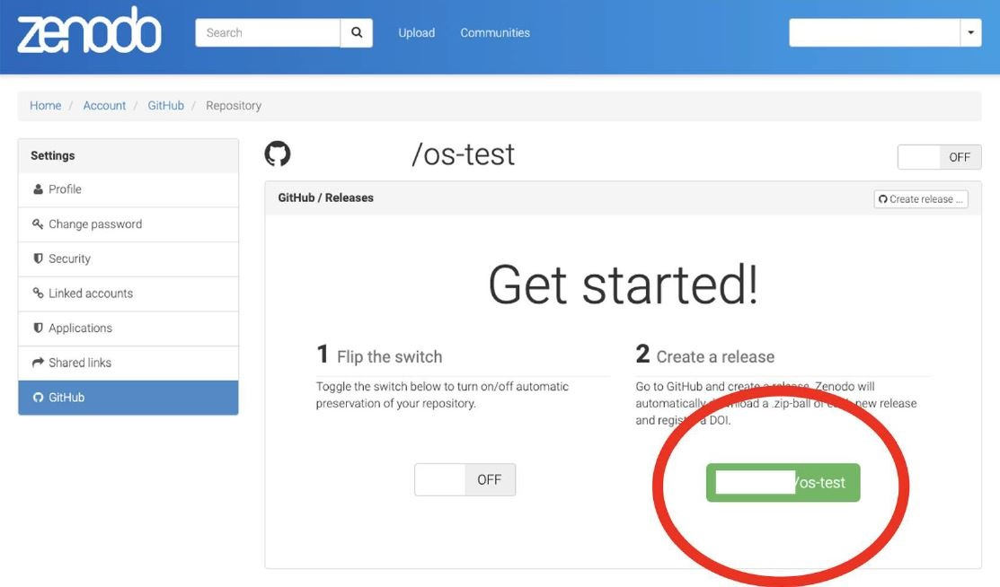

In this lesson you learn the steps for sharing the software that you developed. These steps include determining if, when, and where software should be shared, which roles are needed, and how to enable others to use the code.
After completing this lesson, you should be able to:

"I've been working on code, and now a new collaborator wants to use the code. Awesome! What is the best way to share the code? By email? When should I share the code, and what should I include to ensure the colleague can easily use it?"
There are two major categories of sharing: sharing for development and providing a long-term record.
Writing scientific code is often a dynamic and collaborative process in which multiple people contribute and the code evolves over time. In such projects, it is beneficial to develop open code within a public repository hosting platform such as Github, Bitbucket, GitLab etc. from the beginning of a project. This ensures that all updates are shared openly on the web and can reach potentially interested collaborators and users in near real time.
Archiving ensures your scientific code is accessible for the long-term, and may satisfy archiving requirements from funding agencies and organizations. Long-term accessibility helps others to reproduce your results long after publication. Archiving alone does not promote continued development or collaboration. Archiving is a static and long-term preservation of your software, not an evolution of it.
There are several legal and security concerns to keep in mind when creating or using open software.
In contrast, if the software was created with external (government) funding, some funding agencies may require the software be openly shared.
Remember the parts of the Software Management Plan? What do we need to consider when it comes to sharing?
| LEGAL CONCERNS ☑ | SECURITY CONCERNS |
|---|---|
|
Anyone writing research code and software should familiarize themselves with their organization's policies on sharing and publishing software. Funding agencies, government or private, may have strict software openness requirements. In other cases, sharing software may not be allowed by the organization. Legal concerns can include questions such as:
Once you decide to participate in or begin a new open software project, familiarize yourself with your organization’s policies and practices. Find out more about the legal concerns here. |
|
| LEGAL CONCERNS | SECURITY CONCERNS ☑ |
|---|---|
|
Security is a concern when sharing software. Bad actors can attach malicious code to software in an attempt to infiltrate computer systems through security vulnerabilities, potentially exposing sensitive and proprietary information that can lead to great financial loss for users. Security risks must be considered when sharing software. Security concerns can include:
Once you decide to participate in or begin a new open software project, familiarize yourself with your organization's IT policies. Find out more about the security concerns here. |
|
Many federal agencies are now allowing (if not requiring) the sharing of code created under their grant programs. For example:
Are you funded by a grant? Read the original grant call to see if publishing your code is allowed/required and check whether it has any language about software management and any conditions to publish your code. When in doubt, contact your organization for additional information.

Assume you want to start a new open-source project:
Software release policies differ by organization and each piece of software is different. Therefore, it is important that we do not make assumptions about the software release policies based on previous experience.
Planning to share your code at the beginning of your project makes sharing easier to do when you are ready. Exactly when in your workflow you decide to publicly share your code depends on your work and the requirements of the funding agency, organization, or publisher.
As an example, what does NASA say?
If you are writing scientific software for a project funded by the NASA Science Mission Directorate then:
"Scientific software needed to validate the scientific conclusions of peer-reviewed manuscripts resulting from SMD-funded scientific activities shall become publicly available no later than the publication date of the corresponding peer-reviewed article. This includes software required to derive the findings communicated in figures, maps, and tables, as well as scientifically useful software from models and simulations."
- Open-Source Science Guidance
Other organizations may have different guidance, so it is always best to check what the funding agency or organization requires.
Like data, code can be shared in many ways, for example over email or on a personal website, but these methods are not recommended. So, where should you share your Open Code?
First, consider your institutional or funding agency policies that may dictate where you must share and where you can share. For example, some funding agencies specify long-term repositories where your code must be archived, and they may restrict you from sharing in other forms of repositories. Your scientific discipline may have a specific repository for open code.

Not necessarily. Sharing on a repository is encouraged, but a researcher’s funding organization may require a DOI from an archival repository, such as Zenodo, for long-term preservation of your code at the time of publication or version releases.

Now that you have shared your code in the appropriate way, it’s important to consider if you’ve made it easy for others (or your future self) to reuse your code.
As you may recall from the previous lesson, assigning an appropriate license is necessary for others to know how to use your code.
As an example, here's how you'd assign a license to a GitHub repository:
Choose the appropriate software sharing license that meets your organization requirements. To create a license template in GitHub, add a new file and type "LICENSE" in the name field, then the "Choose a license template" option will appear.

Make sure that your GitHub repository is public, making it searchable by anyone.
Not all code needs to be citable. When released on its own however, there are a few best practices for how to make your code citable.
Adding code to a GitHub repository is not sufficient for archiving code. To archive, we must assign a persistent identifier.
Producing a persistent identifier for your code is the best way to make it citable. This could take form through a peer reviewed publication that describes the software or by archiving the software with a long term repository that produces a DOI or similar identifier. For code shared on GitHub, a DOI can be easily produced for each release of the software from Zenodo.
You can create Digital Object Identifiers (DOIs) for your code that makes it citable. You do this by archiving a GitHub code repository at Zenodo and issue a DOI for the record.
Steps for this activity:
Part 1: Create a test public GitHub repository.
Part 2: Create an archived repository and affiliated DOI.





Zenodo archives your repository and issues a new DOI each time you create a new GitHub release. Follow the steps at "Managing releases in a repository" to create a new one.
Information about how to cite the software can then be added to your README or other documentation in your repository. Another useful step for making your repository citation information accessible is to add a CITATION file to the repository.
CITATION files are a means to make citation information easily accessible in open source software repositories. A citation file format (CFF) is a human and machine-readable standard format that has been developed for CITATION files.

If you are hoping for community input on your software, it is a best practice to include CONTRIBUTING and CODE_OF_CONDUCT files in your repository that outline expectations for member interactions.
We won't go into these in detail here, but you can check out the Xarray package's github repository for a good example.
When writing a SMP, it's important to include a plan for the roles and responsibilities needed to share and (if applicable) maintain your code. Your community will consist of members in different roles – some actively engaged, some with only a passing interest. Sometimes, multiple roles can easily be done by one person (e.g. if you are just archiving a piece of code).
Some roles might include:
Who will add the code to a public repository?
Who will take care of code documentation
Who will help with code reuse?
Adding CITATION, CONTRIBUTING, and CODE_OF_CONDUCT files
Who will maintain the software (if applicable)?
All of these roles may or may not be needed, depending on the size of your project. Have a transparent process for assigning any roles to community members.
If the software is meant for others to use, then the developer should maintain the software.
In this lesson, you learned the key steps in sharing open software:
Answer the following questions to test what you have learned so far.
Question
01/06
Read the statement and decide whether it's true or false:
I don’t need to share my code if I don't plan to continue developing it.
Question
02/06
Read the statement and decide whether it's true or false:
Adding code to a GitHub repository is sufficient for archiving my code.
Question
03/06
Read the statement and decide whether it's true or false:
Organization and government software-sharing policies follow a standard practice.
Question
04/06
Read the statement and decide whether it's true or false:
Publishing your software to a software repository used by common package managers makes it easier for users to install your software.
Question
05/06
Which, if any, of the following are ways you can help others to reuse your code? Select all that apply.
Question
06/06
Which of the following are roles that you should plan for when writing a SMP? Select all that apply.